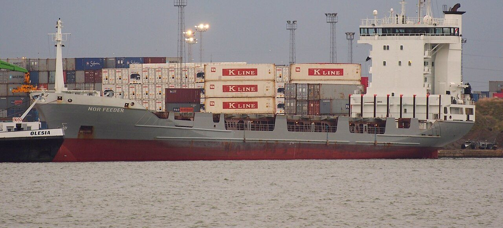
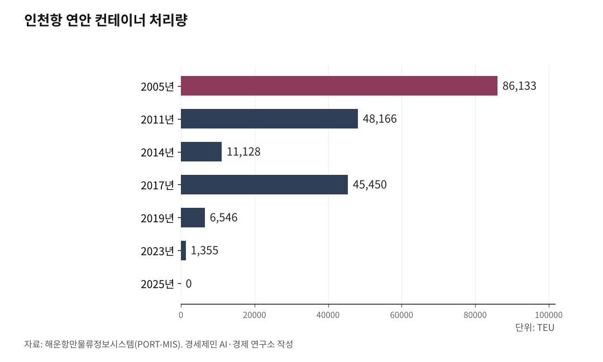

[환황해 철도망④] 인천항 연안 컨테이너 3년째 0TEU, 끊긴 국내 컨테이너 뱃길
국제 정기항로 72개(2025년 이후), 국내 연안 컨테이너 물량은 끊긴 채
전국 연안 컨테이너 16만3572TEU(2025년), 전체 3211만TEU의 0.51%
도로 분담률 92.7%(2023년), 해철 연계의 앞단부터 빈 국내 물류
인천항이 국내 다른 항만과 주고받은 컨테이너는 2024년부터 0TEU다. 2026년 1~8월에도 0이다. 같은 인천항의 국제 정기항로는 2025년 72개로 역대 가장 많아졌다. 밖으로 나가는 뱃길은 늘었고 국내를 도는 뱃길은 끊겼다.

1. 인천항 연안 컨테이너, 3년째 0TEU
해운항만물류정보시스템(PORT-MIS)을 보면 인천항 연안 컨테이너는 2014년 1만1128TEU였다. 2019년 6546TEU, 2023년 1355TEU로 줄었다. 2024년과 2025년은 0이다. 2026년 1~8월도 0TEU로 3년째 기록이 없다.
연안 화물은 국내 항만 사이를 배로 오가는 짐이다. 수출입과 환적으로 드나드는 외항 화물과 따로 센다. 통계가 0이니 인천과 부산, 인천과 광양을 잇는 컨테이너 정기 뱃길도 없다. 부산에서 국내 화물을 싣고 인천으로 오는 컨테이너선이 없는 셈이다.
국제 항로는 반대로 늘었다. 인천항만공사 집계로 인천항 컨테이너 정기항로는 2025년 72개로 역대 가장 많았다. 2026년 10월에도 72개(풀컨테이너선 62개·카페리 10개)다. 밖으로 나가는 길은 72개이고 국내를 도는 길은 0개다.

2. 인부선이 남긴 스무 해의 숫자
인천~부산 연안 컨테이너선을 두 도시 앞 글자를 따 인부선이라 불렀다. 인천항 연안 컨테이너는 2005년 8만6133TEU였다. 2008년 1만1849TEU까지 떨어졌다가 2011년 4만8166TEU로 되살아났다. 2014년 1만1128TEU는 2005년의 7분의 1이 안 된다.
2017년에 한 번 더 뛰었다. 그해 인천항은 4만5450TEU, 부산항은 8만1785TEU, 광양항은 3만7981TEU를 처리했다. 전국 연안 물량은 44만6564TEU로 2011년(47만8380TEU) 이후 가장 많았다. 왜 그해만 늘었는지는 통계만으로 알 수 없다.
반등은 한 해로 끝났다. 2018년 전국 물량은 27만1589TEU로 줄었고 인천항은 7889TEU로 내려앉았다. 2020년 8930TEU로 조금 늘었지만 1만TEU에 못 미쳤다. 2022년 3716TEU와 2023년 1355TEU를 끝으로 기록이 끊겼다.
경인일보는 인부선이 2010년대 중반까지 다녔다고 적었다. 이용하는 화주가 많지 않아 수익성이 좋지 않았다는 설명이다. 정기선이 멈춘 뒤에도 물량은 몇 해 더 이어졌다. 그러나 뱃길을 지킬 만큼 짐이 모이지 않았다.
3. 제주 뱃길만 남은 연안 컨테이너
전국 연안 컨테이너는 2025년 16만3572TEU다. 2011년의 3분의 1 수준이다. 같은 해 전국 무역항 컨테이너 처리량은 3211만TEU로 역대 가장 많았다. 연안 몫은 0.51%로 200개 가운데 1개꼴이다. 나머지는 수출입과 환적 화물이다.
남은 물량도 한쪽에 몰렸다. 2025년 목포항이 8만2358TEU, 제주항이 6만3259TEU를 처리했다. 두 항만이 전국 연안 물량의 89%를 차지한다. 섬으로 드나드는 짐은 배 말고 마땅한 길이 없다.
육지 큰 항만끼리 오가는 몫은 작다. 2025년 광양항 연안 물량은 5746TEU로 전국의 3.5%다. 광양항은 2021~2023년 한 해 3000~1만TEU를 싣다가 2024년 0이 됐다. 2025년에 다시 실었지만 뱃길은 들쭉날쭉하다.
2026년에는 전국 물량이 늘었다. 1~8월 전국 연안 컨테이너는 12만9495TEU로 1년 전 같은 기간보다 29.3% 많다. 그러나 인천항은 같은 기간에도 0TEU였다. 늘어난 물량은 인천으로 오지 않았다.
4. 값과 시간에서 밀린 연안해운
까닭은 셈에 있다. 국토교통부 수송분담률(톤 기준)을 보면 2023년 도로는 92.7%, 해운은 6.1%, 철도는 1.1%다. 도로 몫은 2016년 91.1%에서 2019년 93.1%로 올랐다. 열 해 가까이 이 구도가 굳어 있다.
정봉현·최창호는 2011년 한국항만경제학회지 논문에 국토연구원 조사(2010)를 옮겼다. 수도권~부산 40피트 컨테이너는 도로로 약 50만원에 6시간이 걸린다. 철도는 45만원에 18시간, 연안해운은 52만원에 48시간이다. 연안해운이 값은 더 비싸고 시간은 여덟 배다.
두 사람은 당시 운송환경에서 철도와 연안해운이 도로와 겨루기 어렵다고 적었다. 논문을 보면 부산항 컨테이너의 연안해송 분담률도 2003년 2.3%에서 2007년 1.8%로 내려갔다. 부두에 내린 짐은 다시 트럭에 옮겨 실어야 목적지에 닿는다. 손이 한 번 더 가고 날짜가 늘어나는 길을 화주는 피한다.
짐의 속을 보면 사정이 더 뚜렷하다. 2017년 인천항 연안 출항 3만83TEU 가운데 2만2864TEU가 빈 컨테이너였다. 100개 가운데 76개가 빈 상자였다. 짐보다 빈 상자를 되돌리는 몫이 컸다.
5. 해철 연계의 앞단을 다시 채우려면
지원책도 있다. 한국해운조합은 2026년 전환교통 지원사업에 26억2000만원을 잡았다. 도로로 나르던 짐을 연안해운으로 옮기는 화주와 내항선사를 돕는다. 노후 연안선을 바꾸면 대출금리를 최대 2.5%까지 지원하는 이차보전사업도 돈다.
세제도 움직인다. 재정경제부는 8월 3일 발표한 2026년 세제개편안에 연안해운 우수 화주 과세특례를 넣었다. 인증 화주가 내항선사와 3년 이상 계약하면 운송비의 1%를 법인세나 소득세에서 빼 주는 안이다. 한국해운조합은 2027년 2월께 시행을 내다봤다.
배를 새로 짓는 길도 넓어졌다. 해양수산부는 9월 28일부터 10월 16일까지 2026년 제3차 연안 선박 현대화 펀드를 공모하고 있다. 올해부터 연안 화물선도 지원 대상에 들었다. 펀드는 건조비의 30~60%를 댄다.
해양수산부는 2025년 7월 부산항 신항 피더·잡화부두 민자사업 우선협의대상자로 비엔오티(BNOT)를 뽑았다. 약 8000억원을 들여 피더부두 두 선석과 잡화부두 한 선석을 짓는 안이다. 2029년 착공이 목표다. 부산항 환적 화물을 받는 부두라 연안 컨테이너 대책과는 결이 다르다.
인천항은 2026년 상반기 씨앤레일(카페리와 중국 철도를 잇는 운송)로 1만6497TEU를 날랐다. 배와 열차를 잇는 길이 나라 밖으로만 열려 있다. 경인일보는 2022년 남동·부평·주안·시화 산업단지의 미국·유럽행 수출 짐이 대부분 부산항으로 간다고 적었다. 그 짐을 실을 국내 배는 없다.
연안 컨테이너는 해철 연계의 앞단이다. 인천에 국내 뱃길이 없으면 항만과 철길을 잇는 고리도 앞에서부터 빈다. 대륙으로 가는 철길도 국내 항만과 철길이 먼저 이어져야 쓸모가 생긴다. 보조금 26억2000만원과 세액공제가 그 빈자리를 얼마나 메울지가 지켜볼 대목이다.
※ 이 기사는 AI 프로그램 클로드를 활용해 작성했습니다.
참고문헌
공식 발표자료와 공공기록
· 해운항만물류정보시스템(PORT-MIS), "컨테이너 전년대비 추이"·"컨테이너 전년대비 항만별", 항만물류통계>컨테이너통계, 항코드 전체 31개·030 인천항·622 광양항, 2005~2026년 8월 자료, 2026.10.14. 확인, https://new.portmis.go.kr/
· 국토교통부, "수송량 및 수송분담률", e-나라지표(지표누리) 지표번호 1245, 2026.4.1. 갱신, https://www.index.go.kr/unity/potal/main/EachDtlPageDetail.do?idx_cd=1245
· 인천항만공사, "정기 컨테이너 노선"('26년 10월 기준), 2026.10.14. 확인, https://www.icpa.or.kr/content/view.do?menuKey=1942&contentKey=203
· 해양수산부, "부산항 신항 피더·잡화부두 우선대상협상자로 BNOT㈜ 선정", 2025.7.15., https://www.mof.go.kr/doc/ko/selectDoc.do?docSeq=62303&menuSeq=971&bbsSeq=10
· 해양수산부 연안해운과, "연안 선박 신규 건조 지원으로 바닷길은 안전하게, 연안 물류 경쟁력은 탄탄하게!", 2026.9.27.(KDI 경제교육·정보센터 게재), https://eiec.kdi.re.kr/policy/materialView.do?num=287397
연구보고서와 논문
· 정봉현·최창호, "외국의 전환교통(modal shift) 추진사례 분석과 국내 정책의 수립방향", 한국항만경제학회지, 제27집 제2호(2011.6.), 137-161쪽, https://www.koreascience.kr/article/JAKO201121537469435.pdf
· 이미영·임영태·류재영, "국가물류경쟁력 강화를 위한 복합연계운송체계 구축방안 연구", 국토연구원, 2010.12.(정봉현·최창호 논문이 인용한 운송수단별 비용·시간 원자료)
언론 보도
· 정운, "[정운의 인천물류 톺아보기 #18] 탄소 배출 줄이는 '연안 해운 물류'", 경인일보, 2022.1.15., https://www.kyeongin.com/article/1711024
· 해사경제신문 편집부, "2025년 전국 항만 물동량 15억7101만 톤 처리… 컨테이너 3211만 TEU 사상 최대", 해사경제신문, 2026.1.29., https://www.ihaesa.com/news/article.html?no=88717
· 이홍석, "[신년사]이경규 인천항만공사 사장, "글로벌 초일류 스마트항만 도약"… 7가지 목표 추진", 헤럴드경제 미주판, 2026.1.4., https://www.heraldk.com/article/2026010418515301311
· 해사경제신문 편집부, "연안 노후선 교체에 금리 최대 2.5% 지원 해수부, 2026 현대화 이차보전 참여자 공모", 해사경제신문, 2026.1.13., https://www.ihaesa.com/news/article.html?no=88576
· 해운산업팀, "한국해운조합, '2026 전환교통 지원사업' 협약사업자 공모…연안해운 전환화물에 26.2억 지원", 해사신문, 2026.1.14., http://www.haesanews.com/news/articleView.html?idxno=144952
· 강준완, "중동戰 불안에…인천항 화물 '中 육로 이송' 증가", 한국경제, 2026.7.29., https://www.hankyung.com/article/2026072937871
· 장정욱, "[2026 세법개정안] 선원 부족 난리라면서 '내항선원' 비과세 또 빠졌다", 데일리안, 2026.8.3., https://www.dailian.co.kr/news/view/1673618/
· 해사경제신문 편집부, "연안해운업계 내항 장기계약 화주 세액공제 환영", 해사경제신문, 2026.8.8., https://www.ihaesa.com/news/article.html?no=90508
사진 출처
· [사진1] 인천 중구청, "인천항 갑문.jpg", 위키미디어 공용, 공공누리 제1유형, https://commons.wikimedia.org/wiki/File:인천항_갑문.jpg
· [사진2] Martin Pueschel, "Korea busan pusan harbour cargo container terminal.JPG", 위키미디어 공용, CC BY-SA 3.0, https://commons.wikimedia.org/wiki/File:Korea_busan_pusan_harbour_cargo_container_terminal.JPG
· [사진3] 대한민국역사박물관 현대사아카이브, "Cargo ships and cargo at Jeju Port Pier 9 (1).jpg", 위키미디어 공용, 공공누리 제1유형, https://commons.wikimedia.org/wiki/File:Cargo_ships_and_cargo_at_Jeju_Port_Pier_9_(1).jpg
· [사진4] xxchangwoo0120xx(한국어 위키백과), "Asian Highways 1 South Korea (2).jpg", 위키미디어 공용, CC BY 2.0 KR, https://commons.wikimedia.org/wiki/File:Asian_Highways_1_South_Korea_(2).jpg
· [사진5] 부산항만공사, "부산항 신항 5부두 선석전경(지상)", 공공누리 제1유형, https://www.kogl.or.kr/recommend/recommendDivView.do?recommendIdx=4417&division=img
· [대표사진] Alf van Beem, "Nor Feeder (ship, 1998) IMO 9144689 Port of Antwerp.JPG", 위키미디어 공용, CC0, https://commons.wikimedia.org/wiki/File:Nor_Feeder_(ship,_1998)_IMO_9144689_Port_of_Antwerp.JPG
※ 이 기사는 인공지능을 활용해 작성했습니다.
관련기사
- [환황해 철도망⑤] 북한 교역액의 98.2%는 중국, 국경을 넘는 철길 문은 넷
- [환황해 철도망③] 중국 항만에서 대륙철도 타는 한국 화물, 인천 씨앤레일 3만286TEU
- [환황해 철도망⑥] 선령 30년에 걸린 한중 카페리, 새 배는 대부분 중국 조선소에서
- [환황해 철도망②] 뱃길보다 14일 빠르고 운임은 세 배, 시간을 사는 화물의 대륙철도
저작권자 © AI경세제민 무단전재 및 재배포, AI학습 및 활용 금지